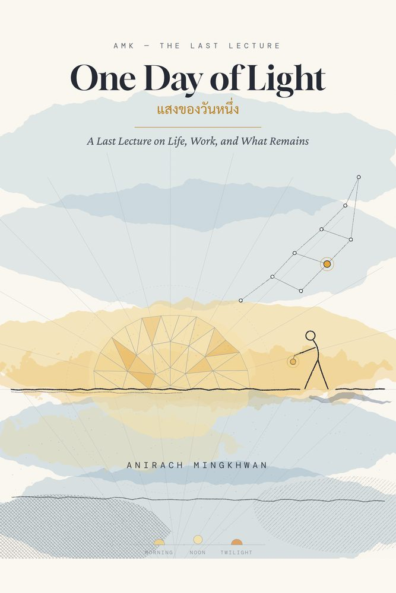
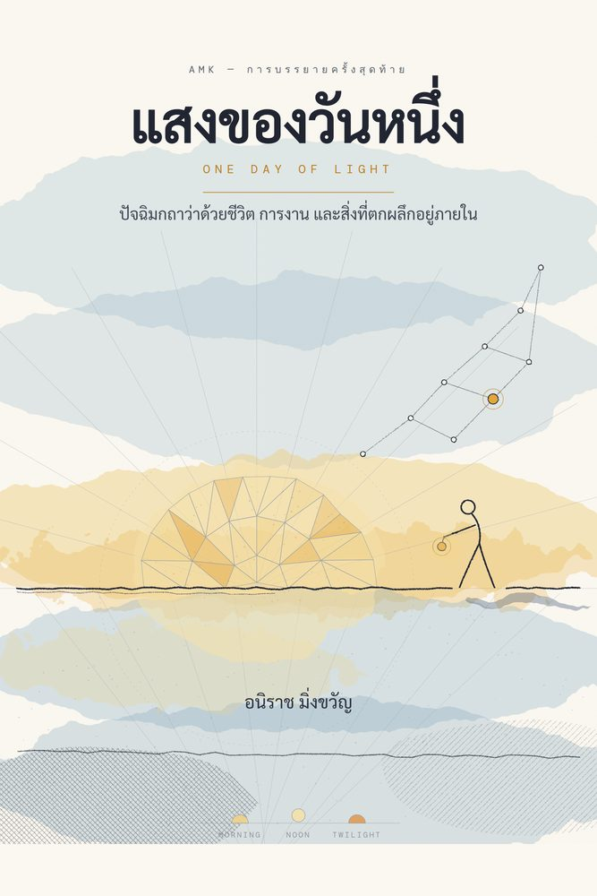

ANIRACH
MINGKHWAN
ครูคนหนึ่ง นักวิจัยคนหนึ่ง คนเขียนหนังสือคนหนึ่ง — คนเดียวกัน A teacher, a researcher, a writer — the same person.
About
ผมสอนหนังสือมาสามสิบสี่ปี งานวิจัยตอนนี้ถามคำถามเดียว — AI ช่วยให้หมอตัดสินใจได้ดีขึ้นจริงไหม — และระหว่างนั้นผมก็เขียนหนังสือถึงคนทุกคน
I have taught for thirty-four years. My research now asks one question — can AI actually help a doctor decide? — and alongside it I write books for everyone.
Dr. Anirach Mingkhwan
Associate Professor, Faculty of Industrial Technology and Management, KMUTNB
PhD, Liverpool John Moores University, UK · 653 citations · h-index 13
View Publications ›Latest updates
- Sep 2026Upcoming — One Day of Light, a last lecture closing thirty-four years of teaching, 19 September at KMUTNB Prachinburi — companion book now free to download
- Aug 2026Three co-authored Springer chapters published in the AIiH 2026 proceedings — knowledge-graph RAG, NCD clinical decision support, and dementia risk stratification
- Jul 2026Two sole-authored Springer chapters on evidence-bound persona extraction published
What I'm working on กำลังทำอะไรอยู่
Clinical decision support that can explain itself
NCD-CIE — ระบบช่วยตัดสินใจทางคลินิกสำหรับโรคไม่ติดต่อเรื้อรัง ที่ใช้เหตุผลเชิงสาเหตุร่วมกับ LLM
A causal-informed clinical decision support system for non-communicable disease, LLM-augmented. AIiH 2026, Springer LNCS.
Retrieval a doctor can check
Multi-source Knowledge Graph RAG สำหรับการวินิจฉัยทางการแพทย์ด้วย LLM — ให้คำตอบชี้กลับไปยังหลักฐานได้
Multi-source knowledge-graph RAG for LLM-based medical diagnosis — answers that point back at their evidence.
Reading a brain over time
ภาพ MRI สมองระยะยาวกับเส้นทางการรู้คิด เพื่อจำแนกความเสี่ยงภาวะสมองเสื่อม
Longitudinal brain MRI and cognitive trajectories, for dementia risk stratification.
Evidence-bound persona extraction
ทฤษฎี อัลกอริทึม และสถาปัตยกรรมของการสร้างโปรไฟล์จากหลักฐาน — สองบทความที่เขียนคนเดียว
Theory, algorithms and an architecture for building a profile only from what the evidence supports. Two sole-authored chapters, Springer 2026.
Libraries in transformation
หนังสือร่วมเขียนกับ Springer ว่าด้วยการนำ AI เข้าสู่ห้องสมุด
A Springer book on taking libraries into the AI transition — ~10,000 accesses, 68 citations.


☀️ For the Last Lecture · 19 September 2026
The book
One Day of Light แสงของวันหนึ่ง
หนังสือเล่มเล็กที่วางโครงเหมือนหนึ่งวันของชีวิต ยี่สิบเอ็ดบทสั้นในสามภาค — รุ่งเช้าคือชีวิต เที่ยงวันคือการงาน และแสงสนธยาคือสิ่งที่ตกผลึกอยู่ภายใน เขียนขึ้นเป็นหนังสือประกอบปัจฉิมกถา และเปิดให้ดาวน์โหลดฟรีทั้งสองฉบับ
“Every life is one day long.” Twenty-one short chapters in three parts — Morning for the life, Noon for the work, Twilight for what remains inside.
Things I built สิ่งที่สร้างขึ้น
Doctor Chatty Bot
Thai medical-assistant chatbot for health questions and guidance.
แชตบอตผู้ช่วยทางการแพทย์ภาษาไทย สำหรับถามตอบและให้คำแนะนำด้านสุขภาพ
Try It Live ›NCD-Care+
Hospital-grade clinical decision support built on a causal inference engine — knowledge graph, risk assessment and what-if simulation.
ระบบสนับสนุนการตัดสินใจทางคลินิกระดับโรงพยาบาล บนเอนจินอนุมานเชิงเหตุ พร้อมกราฟความรู้เชิงเหตุ การประเมินความเสี่ยง และเครื่องมือจำลองสถานการณ์แบบ what-if
Try It Live ›Live apps, research code and workshop materials — the full list ›
Write to me ติดต่อผม
เขียนมาได้เลยครับ — เรื่องงานวิจัย การบรรยาย หรือเรื่องหนังสือ
About research, a talk, or the books.